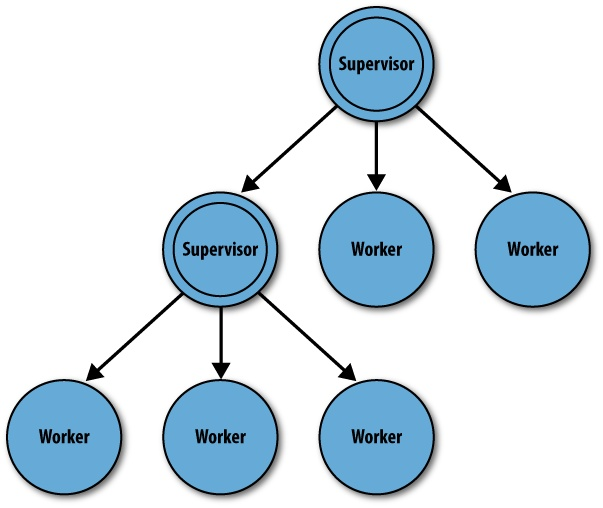
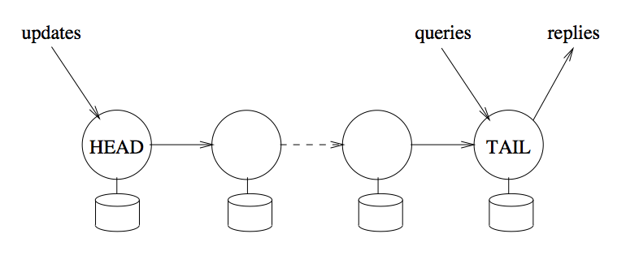

Tolerância a Falhas
Dependabilidade
Nós escrevemos software para que resolvam problemas de espectro bem amplo, indo, do controle de braços robóticos em cirurgias remotas à sistemas de comércio eletrônico, do controle de usinas hidroelétricas à jogos de truco online. Independentemente do problema sendo resolvido, gostaríamos de poder contar com o sistema, de poder depender nele para executar sua tarefa. Desta situação, surge a ideia de dependabilidade, isto é, de um sistema ter a propriedade de se poder depender do mesmo.
Dizemos que um componente C depende de um componente C' se a corretude do comportamento de C depende da corretude do componente C'. E que um componente é "dependável" (dependable) na medida em que outros podem depender dele. A dependabilidade é essencial aos componentes de sistemas distribuídos, afinal, "uma corrente é tão forte quanto seu elo mais fraco."
De acordo com Avizienis et al, tem-se dependabilidade quando os seguintes atributos estão presentes.
- Disponibilidade (Availability) - Prontidão para uso.
- Confiabilidade/Fiabilidade (Reliability) - Continuidade do serviço.
- Segurança (Safety) - Tolerância a catástrofes.
- Integridade (Integrity) - Tolerância a modificações.
- Manutenabilidade (Maintainability) - Facilidade de reparo.
Em se falando de Segurança, deve-se falar também em Confidencialidade (Confidentiality), a garantia de que a informação somente é acessível a quem é devido. A combinação de Disponibilidade, Integridade e Confidencialidade é também chamada de Segurança (Security).
Mas o que significa, na prática, ser dependável e seguro (secure)? Para respondermos a esta questão, primeiro precisamos entender os tipos de problemas que aparecem em vários níveis, desde o seu desenvolvimento até seu uso.
Falhas, Erros e Defeitos
No nível mais básico dos problemas a serem contornados para se obter dependabilidade, temos as falhas (defect, fault, para alguns, falta), que é um erro no desenvolvimento do sistema, como bugs ou defeitos de fabricação, que o leva a ficar diferente do que foi especificado.
Uma falha existe mesmo se for raramente ativada e mesmo se seus efeitos nunca forem percebidos.
Por exemplo, se o código tem um <= em vez de < na especificação de uma iteração, mas se uma condição faz com que a iteração seja interrompida antes, o código ainda tem uma falha.
No segundo nível, temos o erro (error), que é a manifestação da falha levando a algum comportamento indevido. No exemplo acima, um erro seria quando a iteração passasse do ponto correto por causa do <=, por exemplo, na hora de escrever uma string em um array, estourando o limite do array na pilha mas sobrescrevendo uma variável que não seja mais usada.
O erro pode passar despercebido, mas ainda assim é um erro.
Finalmente, no terceiro nível, temos os defeitos (failure, para alguns, falha), um erro percebido pelo usuário. Continuando o exemplo, um stack overflow que leva a uma falha de segmentação, leva a um defeito.
Quando um componente manifesta um defeito, outros componentes que dele dependem, internalizarão entradas indevidas, uma falha externa, o que levará a seu próprio estado interno a estar errôneo e possivelmente também manifestar um defeito. Esta cadeia pode levar cenários catastróficos. Vejamos alguns exemplos de defeitos famosos.
Ariane 5
O Ariane 5 foi um foguete desenvolvido pela agencia espacial européia que explodiu durante o lançamento.
The Explosion of the Ariane 5
On June 4, 1996 an unmanned Ariane 5 rocket launched by the European Space Agency exploded just forty seconds after its lift-off [...] after a decade of development costing $7B. The destroyed rocket and its cargo were valued at $500M. [...] the failure was a software error [...] a 64 bit floating point number [...] was converted to a 16 bit signed integer. The number was larger than 32,767, the largest integer storeable in a 16 bit signed integer, and thus the conversion failed.

O erro gerado foi tratado como input, causando outros erros, que geraram instabilidade e que levou o sistema a se auto-destruir.
787 Dreamliner
O avião 787 dreamliner, da Boeing, tem um problema que tornar necessário reiniciar o sistema elétrico a cada 248 dias, ou o mesmo pode ter uma pane.
Quote
The plane’s electrical generators fall into a failsafe mode if kept continuously powered on for 248 days. The 787 has four such main generator-control units that, if powered on at the same time, could fail simultaneously and cause a complete electrical shutdown.
Segundo as "más línguas", o problema é que acontece um overflow em um contador de tempo
Quote
248 days == 2^31 100ths of a second.
— Fiora @ 日本語でFF14 (@FioraAeterna) May 1, 2015
even in 2015, our airplanes have integer overflow bugs https://t.co/6Z8d4y9gjM
737 Max
Neste outro caso envolvendo a Boeing, um sensor é usado para detectar se o avião estava subindo rápido demais e correndo o risco de perder sustentação, um comportamento que se verificou comum no 737 Max por causa dos grandes motores usados nele e que o diferenciam do 737 original. Se o risco é detectado, um sistema automatizado força o nariz do avião para baixo para corrigir o problema. Contudo, no 737 Max apenas um sensor é usado e no caso de falha do mesmo, o avião é forçado para baixo e em direção ao solo, o que levou à morte de centenas de pessoas.1
Subaru SUV
Em 2018 a Subaru fez um recall gigante, de mais de 1 milhão de unidades de um seus modelos de SUV, porquê uma falha em um software fez com que soldagens fossem feitas incorretamente no chassis dos veículos. O erro era irreparável, levando a grandes prejuízos.
![[Recall Subaru()https://spectrum.ieee.org/riskfactor/computing/it/coding-error-leads-293-subaru-ascents-to-the-car-crusher)]](images/subaru.png)
Root cause analysis
Quando defeitos aparecem, é importante identificar suas causas, isto é, a cadeia de eventos que o levou a acontecer. Algumas empresas publicam a root cause analysis ou a análise post-mortem para a comunidade como forma de compartilhar conhecimento e também por questões de transparência. Veja esta compilação para uma extensa lista de análises.
Como alcançar dependabilidade
Falhas são um fato da vida, uma constante no desenvolvimento de sistemas. Mas se o objetivo é a dependabilidade, precisamos de formas de lidar com falhas, previnindo, removendo e tolerando-as.
A prevenção de falhas acontece por meio de técnicas bem estabelecidas de engenharia. No caso de sistemas de software, modularização, linguagens de programação fortemente tipadas e encapsulamento são passos essencias. Uso de especificações formais, testadas ou provadas corretas, são outro passo neste sentido. Por exemplo, diversas empresas usam a linguagem TLA^+ para verificar a corretude de seus algoritmos2. Outras técnicas envolvidas na prevenção de falhas são análise estática, prova de teoremas, execução simbólica, teste de modelos, etc.
Mesmo uma especificação correta pode produzir um sistema com falhas pois a tradução de especificações formais para código é um passo complexo. Testes e manutenção do sistema permitem a remoção de falhas que passarem despercebidas pelas tentativas de prevenção.
Testes, contudo, apenas aumentam a confiança no sistema, não sendo capazes de certificar a ausência de problemas. Assim, tenta-se desenvolver os sistemas de forma que, mesmo se falhas ainda estiverem presentes, seus efeitos não sejam percebidos como defeitos, isto é, sistemas que tenha tolerância a falhas (ou prevenção de defeitos).
Para se alcançar tolerância a falhas é necessário detectar e se recuperar de erros. Por exemplo, um sistema de arquivos com journal, como o Ext v3, armazena informação redundantemente e, quando detecta que os dados em sua forma principal estão corrompidos, usa o journal para recuperar os dados, mascarando o erro.
De acordo como Avizienis et al, temos as seguintes técnicas para tolerar falhas:

Um sistema que sofra de falhas recorrentes é um bom candidato a previsão de falhas, em que se estima quando uma falha ocorrerá baseado no histórico. Por exemplo, um sistema que sofra falha por uso excessivo de memória a cada dez dias em uso, pode ser reiniciado no nono dia, em condições controladas, para evitar problemas maiores enquanto a razão do uso excessivo de memória é corrigido.
Classes de Defeitos
Para previnirmos e toleramos com falhas, precisamos entender como se manifestam e, para isso, uma classificação é essencial.
Quebra
Falhas de quebra (crash) são falhas em que o componente para de funcionar, irreversivelmente. Uma vez que o componente cessa seu funcionamento, qualquer comunicação com o mesmo é interrompida e pode dar bons indicativos da falha aos outros componentes. Em um sistema assíncrono, contudo, não há garantias de que esta detecção do defeito será correta.
Alguns sistemas, denominados fail-stop, forçam-se a parar de funcionar quando percebem um defeito, imitando uma quebra, e implementando um comportamento fail-fast. Estes sistemas podem emitir um "canto do cisne" para permitir que outros componentes detectem o defeito.
Após pararem, alguns sistemas podem aplicar passos de recuperação e voltar a funcionar, no que é denominado fail-recover. Ao retornar à operação, o processo poderia assumir uma nova identidade.
Omissão
Em um defeito de omissão (omission failure), um componente não executa alguma ação. Por exemplo, uma requisição recebida por um servidor não é executada, um disco não armazena os dados no meio magnético, ou uma mensagem não é transmitida. Este tipo de defeito é difícil de ser identificado pois outros componentes não necessariamente tem acesso direto ao resultado da operação. Por exemplo, se o meio de comunicação se recusou a entregar uma mensagem, então houve um defeito de omissão. Mas se a mensagem é retransmitida até que tenha sua entrega confirmada, então o defeito é mascarado.
Temporização
Em sistemas em que há limites de tempo para a execução de ações, uma violação destes limites é defeito de temporização. Por exemplo, se o meio de comunicação se recusou a entregar uma mensagem, então houve uma falha de omissão. Novamente considerando problemas de transmissão de mensagens, se o meio de comunicação se recusou a entregar uma mensagem que deveria ser entregue dentro de 3ms, então houve um defeito de omissão. Mas se a mensagem é retransmitida até que tenha sua entrega confirmada, mas a mesma é entregue com 5ms, então o mesmo que após o limite para então o defeito é mascarado como um defeito de temporização.
Arbitrários
Um defeito arbitrário ou bizantino é um no qual qualquer comportamento pode acontecer. Por exemplo, uma mensagem pode ser modificada, um servidor pode reiniciar-se constantemente, todos os dados podem ser apagados, ou acesso pode ser dado a quem não é devido. Estes defeitos podem ser causados por agentes mal intencionados, como hackers e vírus.
Hierarquia
Fail-stop \subset Quebra \subset Omissão \subset Temporização \subset Arbitrária
Falhas intermitentes
Algumas falhas fogem à classificação acima por terem um comportamento especial, se manifestando de forma intermitente, por causa de eventos esparsos como picos de energia, ou pelo comportamento emergente da interação com outros sistemas.
Heisenbug
The name may seem to rhyme well with Heisenberg, but the Heisenbug is actually "a bug that disappears or alters its behavior when one attempts to probe or isolate it." The Freenet Project describes a Heisenbug in certain Java virtual machines.
Bohrbug
The Bohrbug is a sort of antonym of the Heisenbug, as this bug does not disappear or alter its characteristics when it is researched.
Mandelbug
The Mandelbug, named after Benoit Mandelbrot (think Mandelbrot set), is a bug whose underlying causes are so complex and obscure as to make its behavior appear chaotic.
Schroedinbug
The Schroedinbug is a design or implementation bug in a program that doesn't manifest until someone reading source or using the program in an unusual way notices that it never should have worked, at which point the program promptly stops working for everybody until fixed. Here, an Office developer describes "stupid SQL tricks" to get rid of a "classic Schroedinbug."
Correlação entre falhas
Algumas falhas são ativadas por entradas e, neste caso, mesmo que se tenha várias cópias do mesmo sistema, todas falharão uma vez que a entrada problemática acontecer. Este é um cenário em que as falhas não são independentes, mas correlatas. Para evitá-lo, podemos usar n-version programming, que consiste basicamente em ter múltiplas implementções do mesmo sistema desenvolvidas de forma independente, isto é, fazendo uso de um ou mais da seguintes opções:
- múltiplos times
- múltiplos sistemas operacionais
- múltiplas linguagens de programação.
Esta técnica é interessante mais raramente usada, basicamente pelo seu alto custo. Além disso, erros de especificação são reproduzidos e levam times diferentes a produzir erros iguais.
Degradação graciosa
Dependendo dos efeitos e tratamentos.
- Fail safe - defeito não leva a comportamento inseguro (sistema de entretenimento no avião)
- Fail soft - graceful degradation (sistema de controle de vôo)
-
Fail fast - para o fluxo de defeitos (e possível reinício) 
-
Robusto -- erros não atrapalham execução (tratamento de exceções)
- Quebradiço (brittle) -- não resiliente a falhas
Redundância de Processos
De forma geral, tolerância a defeitos é obtida por algum tipo de redundância. Por exemplo, pense no pneu estepe de um carro, no gerador de eletricidade de um hospital. Redundância permite remover os pontos únicos de falha, SPOF (Single Point of Failure), isto é, componentes que se pararem, levam o sistema como um todo a parar.
Redundância pode ser aplicada em vários níveis, por exemplo, gastando mais tempo na especificação do projeto, ou montando um laboratório de testes mais próximo do ambiente de produção.
Redundância implica em mais custos, então o grau de redundância a ser utilizado depende de uma análise custo x benefício.
No caso de um sistema distribuído, quando falamos em redundância, normalmente falamos em redundância de processos, cópias ou réplicas, mesmo que não desevolvidos usando n-version programming Assim, com múltiplas cópias, quando um processo apresenta um defeito, outro podem continuar executando o serviço. Dois modos clássicos de replicação são o ativo e o primário/cópia.
No caso da replicação ativa, as várias cópias executam todos os comandos enviados para o sistema, estando assim todas aptas a continuar a executar o serviço. A técnica de replicação de máquinas de estados vista no capítulo anterior é uma instância de replicação ativa e da qual voltaremos a falar adiante.
No caso da replicação primário/cópia, também conhecida como mestre/escravo, o primário é responsável por lidar com clientes e por informar cópias das modificações de estado.

Como as atualizações de estado fluem do primário para a cópia, é possível que a cópia não tenha o estado mais atual. Para visualizarmos melhor esta situação, vejamos a eplicação em cadeia, uma generalização de primário/cópia em que os processos se organizam em um sequência para executar operações.

Atualizações no sistema são sempre direcionadas ao primário, a cabeça da sequência. Leituras, se absolutamente necessitarem dos dados escritos mais recentemente, também devem ser direcionadas à cabeça. Caso contrário, podem ser direcionadas aos processos na cauda, diminuindo a carga de trabalho na cabeça.
Coordenação
Para replicar, precisamos coordenar as execuções dos processos, mas como?
Uma história de três exércitos}
- A e B deve atacar C
- Se A e B atacam juntos, ganham
- Se atacarem separados, são ambos derrotados.
- Comunicação por mensageiros,
- que podem se perder e levar muito tempo para chegar
- podem ser mortos no caminho
- Atacamos ao amanhecer! (relógios sincronizados)
Será que A não mandou uma resposta? Será que A foi destruído? Será que o mensageiro morreu? Será que parou em um inferninho?
Como saber se o outro recebeu a mensagem e irá atacar ao mesmo tempo? Mensagem de confirmação! Como saber se o um recebeu a confirmação? Confirmação da confirmação! Como saber se o outro/um ...?
Nesse cenário, até simples, coordenar os dois processos é \alert{impossível}! É impossível garantir que chegarão a um \emph{acordo}.
Acordo
Comunicação em Grupo
Dependendo do modelo, pode ser muito fácil ou impossível fazer com que um grupo de processos concorde sobre como agir/entre em acordo.
Um dos fatores é como o grupo é organizado. Assumindo um grupo estático (sem entrada e saída de processos), em que todos conversam com todos diretamente (grafo completo).
É mais fácil, mas não trivial neste modelo. Vejamos o problema de difusão confiável. Mas antes, vamos definir.
- Correto x Falho: Um processo é correto se ele não falha.
Difusão Confiável * Corretude: Se um processo \alert{correto} p difunde uma mensagem m para processos no grupo G, então todos os processos corretos em G entregam a mensagem. * Acordo: Se um processo correto em G entrega uma mensagem m, então todo processo correto em G entrega m. * Validade: Somente mensagens difundidas são entregues.
Terminologia} * Enviar/Receber: rede * Difundir/Entregar: difusão * Corretude x Progresso
Algoritmo - Difusão Confiável
Para p difundir m para G
- p envia m para todo q \in G
- Todo processo q\in G que receber a mensagem, envia m_{ack} para p
- Ao receber ack de todos os processos q \in G, p para de retransmitir e entrega m.
Satisfaz as duas propriedades? E se um dos receptores falhar?
Assumamos detector de falhas perfeito.
Algoritmo - Difusão Confiável
Para p difundir m para G
- p envia m para todo q \in G
- Todo processo q\in G que receber a mensagem, envia m_{ack} para p
- Ao receber ack de todos os processos \alert{corretos} q \in G, p para de retransmitir e entrega m.
Pq p só entrega m no final?
Posso assumir TCP como protocolo de comunicação? Não! TCP não é confiável neste sentido.
Assuma máximo de f falhas, fail stop
Algoritmo - Difusão Confiável
- p envia m para processos em G.
- Todo processo q \in G que receber m
- envia m_{ack}
- repassa m para G processos.
- Mensagens são retransmitidas de tempos em tempos.
- Ao receber f+1 acks, entrega m.
Algoritmo - Difusão Confiável
Assuma máximo de f falhas e uso de TCP
1 2 3 4 | |
Confiável? Somente se conexões quebradas for reestabelecidas e mensagens reenviadas.
Difusão Confiável FIFO
- Corretude.
- Acordo.
- Validade.
- FIFO: Se p difunde m e então n, e se q entrega n, então q entrega m antes n.
!!!example "Difusão Totalmente Ordenada * Corretude: Se um processo p difunde uma mensagem m para processos no grupo G, e se p não falha, então todos os processos corretos em G entregam m * Acordo: Se um processo correto q em G entrega uma mensagem m, então todo processo correto em G entrega m. * Ordenação: Se um processo entrega mensagem m e depois n, então qualquer processo que entregue a mensagem n deve primeiro entregar m. * Validade: Somente mensagens difundidas são entregues.
Resolver diretamente este problema não é trivial. Por isso, veremos primeiro o problema do Consenso Distribuído.
Consenso
Sejam vários processos. Cada um propõe um único valor por \emph{instância de consenso}. O objetivo é decidir um dentre os valores propostos:
- Validade: Somente um valor proposto pode ser decidido.
- Terminação: Todo processo não falho decide-se.
- Acordo: Se um processo decide-se por v e outro por w, então v = w
É impossível resolver deterministicamente o problema do consenso em sistema assíncrono sujeito a falhas. Mas o consenso é resolvido frequentemente em sistemas assíncronos sujeitos a falhas. Isso porque normalmente estes sistemas se comportam sincronamente. Há diversos algoritmos de consenso que terminam quando o sistema se comporta bem. O mais famoso, atualmente, é o Paxos
Todo
- Synod
- Paxos
Primitivas
- send\&receive/enviar\&receber -- rede
- propose\&decide/propor\&decidir -- consenso
- broadcast\&deliver/difundir\&entregar -- difusão
Difusão Totalmente Ordenada Dado infinitas instâncias de consenso, pode-se usá-las para resolver difusão atômica:
- Ordene as instâncias de consenso.
- Para difundir mensagem m, proponha a mensagem na menor instância i em que não tiver visto uma decisão.
- Se a decisão de i não é m, volte para o passo anterior.
- Entregue as decisões na ordem das instâncias.
Replicação de Máquinas de Estados
Ativo/Ativo -- Se todos os processos executam a mesma sequência de comandos, todos avançam pelos mesmos estados.
- Mesmo estado inicial
- Comandos determinísticos
- Comandos causalmente relacionados são executados em mesma ordem
Possíveis diferentes ordens com mesmo efeito?
touch /tmp/file1echo "teste testando" $>>$ /tmp/file2rm /tmp/file1mkdir /dir1
Diversos sistemas abstraem problemas de coordenação em sistemas distribuídos.
Estudaremos alguns nas aulas seguintes.
Antes, vamos nos aprofundar no estudo de um protocolo de Consenso/Difusão atômica.
Estudo de Caso do Raft
Estudo de Caso: Paxos
- Sínodo (Synod): consenso
- Paxos: Difusão Atômica
Estudo de caso: Atomix Copycat
- Framework de replicação de máquinas de estados implementada pela Atomix.
- Implementação do Raft
- API simples
- Java 8 (lambdas e futures)
- Página Web
\begin{frame}[fragile,allowframebreaks]{Lambda}
1 2 | |
class Tarefa implements Runnable {
public void run(){
while (true)
System.out.println("Bem vindo a um loop infinito");
}
}
new Thread(new Tarefa()).start(); \end{lstlisting}
\framebreak
1 | |
\framebreak
1 | |
\framebreak * Encadeamento (fluent)
\begin{frame}[fragile]{Future}
1 | |
1 2 | |
\begin{lstlisting}[language=java] while (!futFib.isDone()) System.out.println("tah calculando...");
int fib217 = futFib.get(); \end{lstlisting}
1 | |
Atomix-Raft}
1 2 3 4 | |
Lab}
1 2 3 | |
Clone e compile o projeto}
1 2 3 4 5 6 7 | |
\begin{frame}[fragile]{mvn test} Resultado esperado.
1 2 3 4 5 6 7 8 9 10 | |
Estrutura} Explore o projeto. Na pasta/URL \url{https://github.com/pluxos/atomix_labs/tree/master/replication/src/main/java/atomix_lab/state_machine}
Há três pastas. Analise-as nesta ordem
1 2 3 4 5 6 7 | |
Lab} O projeto foi construído seguindo as instruções no tutorial mencionado antes, saltando-se a parte dos snapshots, isto é:
1 2 3 4 5 6 7 8 | |
Lab} Para executar um servidor, você precisa passar como parâmetro
1 2 3 4 5 6 | |
Sabendo seu identificador, o servidor sabe em qual porta escutar e em quais IP/porta se conectar.
\begin{frame}[fragile]{Lab} Execute três servidores. Usando o maven, da linha de comando, fica assim: \begin{tiny} \begin{verbatim} mvn exec:java \ -Dexec.mainClass="atomix_lab.state_machine.server.GraphStateMachine" \ -Dexec.args="0 127.0.0.1 5000 127.0.0.1 5001 127.0.0.1 5002"
mvn exec:java \ -Dexec.mainClass="atomix_lab.state_machine.server.GraphStateMachine" \ -Dexec.args="1 127.0.0.1 5000 127.0.0.1 5001 127.0.0.1 5002"
mvn exec:java \ -Dexec.mainClass="atomix_lab.state_machine.server.GraphStateMachine" \ -Dexec.args="2 127.0.0.1 5000 127.0.0.1 5001 127.0.0.1 5002" \end{verbatim} \end{tiny} %As instruções, sem quebra, estão no README do repositório.
\begin{frame}[fragile]{Lab} O cliente não precisa de um identificador, apenas dos pares IP/porta dos servidores.
1 2 3 4 5 | |
Para executá-lo, use o comando
Exercício} Uma vez executado o projeto, modifique-o para incluir uma nova operação (Command) e nova consulta (Query).
\section{Serviços de Coordenação}
Serviços de Coordenação}
1 2 3 | |
\subsection{Estudo de Caso: ZooKeeper}
\subsubsection{Visão Geral} ZooKeeper} \url{http://zookeeper.apache.org/}
ZooKeeper}
ZooKeeper}
ZooKeeper}
ZooKeeper}
ZooKeeper}
ZooKeeper} \includegraphics[width=.7\textwidth]{images/zknamespace}
ZooKeeper}
\includegraphics[width=1\textwidth]{images/zkservice}
ZooKeeper} \includegraphics[width=1\textwidth]{images/zkcomponents}
ZooKeeper}
Desempenho} \includegraphics[width=1\textwidth]{images/zkperfRW_3_2}
\subsubsection{Uso} ZNodes} \includegraphics[width=.6\textwidth]{images/zknamespace}
1 2 3 4 5 6 7 8 9 10 | |
\begin{frame}[fragile]{Lab}
1 2 3 4 5 6 7 8 | |
\frame{Exemplo}
ZNodes}
1 | |
\frame{Exemplo}
ZNodes}
1 | |
\frame{Exemplo}
ZNodes}
1 | |
\frame{Exemplo}
ZNodes}
1 2 | |
\frame{Exemplo}
Durabilidade?} Todas as operações são colocadas em um log em disco.
\subsubsection{Receitas} Receitas} É possível resolver diversos problemas encontrados em sistemas distribuídos usando-se o ZooKeeper.
Rendezvous} Ponto de encontro de processos.
1 2 3 4 5 6 7 8 9 10 11 12 13 14 15 16 | |
Como lidar com saída de processos?} Faça todos os zNodes são efêmeros. \ Quando um nó é desconectado, o zNode correspondente será destruído.
Como detectar mudanças no grupo de processos?} Monitore os filhos de /rendezvous/app1\ Sempre que receber notificações, refaça o cálculo do \emph{membership}.
Eleição de Líderes} Rendezvous.\ Faça os zNodes sequenciais. Ordene os zNodes e escolha o primeiro. Monitore o zNode. Se ele sumir, eleja outro líder.
Exclusão Mútua} Construa uma fila usando nós efêmeros e sequenciais. O processo na cabeça da fila tem direito de acesso. Em caso de falhas, o processo é removido da cabeça da fila.
Compartilhamento de Parâmetros de Configuração} Pronto!
Receitas}
1 2 3 4 5 6 | |
\url{http://zookeeper.apache.org/doc/trunk/recipes.html}
Curator} \includegraphics{images/curator-logo}
Um livro de receitas implementadas em ZK.
\url{http://curator.apache.org}
Lab}
1 2 | |
Lab}
1 2 3 4 5 6 7 | |
\begin{frame}[fragile]{Multi-node} Crie três arquivos, zoo1.cfg, zoo2.cfg e zoo3.cfg.\Por exemplo, zoo1.cfg fica assim:
1 2 3 4 5 | |
Crie diretórios e arquivos de identificação.
1 2 | |
Execute servidores.
1 | |
Use \verb|start-foreground| para acompanhar a execução.
Lab}
1 2 | |
\subsection{Falhas Bizantinas}
Uma história de três exércitos -- Versão 2} Exércitos estão às portas de Bizâncio, aka Constantinopla, aka Istambul.
Todos os exércitos tem que atacar em conjunto ou se retirar em conjunto.
Cada exército é comandado por um General. Alguns destes preferem atacar, enquanto outros preferem se retirar.
Alguns generais podem ter sido comprados, e mandar mensagens discrepantes para os outros, ou simplesmente não mandar mensagens.
Fonte: \href{http://research.microsoft.com/en-us/um/people/lamport/pubs/byz.pdf}{Lamport, L.; Shostak, R.; Pease, M. (1982). "The Byzantine Generals Problem" (PDF). ACM Transactions on Programming Languages and Systems. 4 (3): 382–401. doi:10.1145/357172.357176.}
Generais e Tenentes} Problema pode ser mudado para:
1 2 3 | |
Generais e Tenentes} Suponha 3 exércitos. \ Comandante (traidor) diz "Ataque!" Tenente A e "Retirada!" tenente B.\ Ou \ Comandante diz "Ataque!" a ambos. Tenente A segue a ordem mas B se retira.
E se os tenentes trocarem informações?
Como diferenciar casos em que Comandante ou Tenente é traidor?
Generais e Tenentes} Só há solução se mais de \frac{2}{3} dos Generais/Tenentes são leais.
%http://www.drdobbs.com/cpp/the-byzantine-generals-problem/206904396?pgno=5
Comunicação}
1 2 | |
4/0} General manda ordens.
Ausência de ordem = Retirada
Tenente repassa ordens
Maioria de comandos é comando a ser seguido
4/0} General manda ordens.
Ausência de ordem = Retirada
Tenente repassa ordens
Maioria de comandos é comando a ser seguido
Comunicação}
1 2 3 | |
É possível detectar inconsistências e processos bizantinos.
%http://cs.brown.edu/courses/cs138/s16/lectures/19consen-notes.pdf \section{Outros tópicos}
%TODO \subsection{Detectores de Falhas}
\subsection{Reconfiguração}
Reconfiguração da Aplicação} Na segunda entrega do projeto, você distribuiu a carga do seu banco de dados entre vários nós. Caso um nó falhe, parte dos seus dados será perdida.
Para corrigir esta deficiência, na terceira entrega, cada nó será replicado em três vias e, assim, caso um nó falhe, outros dois continuarão a manter o dado.
Reconfiguração da Aplicação} Ainda assim, há problemas. E se mais de um, de um mesmo conjunto de réplicas, falhar?
Embora seja pequena a probabilidade de dois nós de um mesmo grupo falharem em instantes próximos, dado tempo suficiente, qualquer evento com probabilidade diferente de 0 acontecerá.
Precisamos de uma forma de trocar nós da aplicação que falharam por novos nós.
Este é problema denominado Pertinência de Grupo ou \emph{Group Membership}
Group Membership} Para não correr o risco, retire o processo falhos do grupo e coloque outro no lugar!
I.e., mude a visão que o sistema de quem é o grupo.
Visões} \includegraphics[width=.7\textwidth]{images/vc}
Fonte: \href{https://www.cs.rutgers.edu/~pxk/417/notes/virtual_synchrony.html}{Paul Krzyzanowski}
G é o grupo de processos participando do sistema, é a Visão do Sistema.
Inicialmente, G consiste de apenas o processo p, como o processo que cria o cluster no Atomix. Na sequência, outros processo vão se unindo ao grupo através de View Changes. Uma vez que p e q estão no grupo, inicia-se a comunicação entre eles. Quando r, s e t aparecem, também entram no grupo por meio de uma nova visão.
Finalmente, quando ambos p e q falham, os outros processo os excluem da visão, e continuam funcionando normalmente.
Impossibilidade de Detecção de Falhas} Em um sistema distribuído assíncrono, é impossível distinguir com toda certeza um processo falho (parou de funcionar) de um que está lento.
Como decidir se mudar ou não de visão?
Ou aceita a imprecisão e muda quando suspeitar de uma falha, ou corre o risco de ficar esperando \emph{ad eternum} e não mudar, mesmo quando uma falha aconteceu.
Uma ``solução''!} Quando suspeitar de falha, reporte suspeita a outros processos, que também passarão a suspeitar.
Tome decisão baseado na suspeita, isto é, troque de visão quando houver suspeita.
Pague o preço de uma suspeita errada, isto é, quando um processo for removido da visão indevidamente, adicione-o novamente.
Sincronismos Virtual} Gerenciamento de Grupo/Group Membership e Comunicação em Grupo
1 2 3 4 5 6 | |
Visão de Grupo}
1 2 3 4 | |
Eventos}
1 2 3 | |
Visões} \includegraphics[width=.7\textwidth]{images/vc}
Fonte: \href{https://www.cs.rutgers.edu/~pxk/417/notes/virtual_synchrony.html}{Paul Krzyzanowski}
Sincronismo Virtual} Deve satisfazer
1 2 3 4 | |
A troca de Visão é uma barreira.
ISIS Toolkit} Sistema de Sincronismo Virtual tolerante a falhas desenvolvido por Ken Birman, Cornell University (\url{http://www.cs.cornell.edu/Info/Projects/Isis/})\ ISIS: An Environment for Constructing Fault-Tolerant Distributed Systems. Kenneth Birman, D. Skeen, A. El Abbadi, W. C. Dietrich and T. Raeuchle. May 1983.
1 2 3 4 5 6 7 | |
Difusão Totalmente Ordenada}
1 2 3 4 5 6 7 | |
E se mandarmos mensagens do tipo ``A partir da entrega desta mensagem, o grupo de processos é G.''
Sincronismo Virtual} Deve satisfazer
1 2 3 4 5 6 7 8 9 10 11 12 13 14 | |
State Transfer} \includegraphics[width=.7\textwidth]{images/state_transfer}
\href{http://www.gsd.inesc-id.pt/~ler/docencia/tfd0405/bib/BSRNA.pdf}{Building Secure and Reliable Network Applications}
Difusão Atômica \equiv Sincronismo Virtual?} Seria uma boa aproximação, mas que poderia ser relaxada.
Em certas aplicações, FIFO ou Causal seriam suficientes dentro da visão, desde que a mensagem de mudança da visão seja totalmente ordenada com as comuns.
Particionamento} E se dois subconjuntos mutuamente exclusivos se formarem e criarem visões independentes?
\emph{Primary Partition Model} -- Somente a partição primária pode mudar de visão.
Lembram-se que no Raft somente uma partição com uma maioria de processo pode decidir? É exatamente a mesma situação, pois os processos estão chegando a um Consenso sobre quem é a nova visão.
Extended Virtual Synchrony} \emph{Primary Partition Model} -- Não é adequado a uma rede geograficamente distribuída (Internet scale).
Lembram-se que no Raft somente uma partição com uma maioria de processo pode decidir? É exatamente a mesma situação, pois os processos estão chegando a um Consenso sobre quem é a nova visão.
É possível que no trabalho dois, alguns de vocês tenham tentado gerar locks do sistema para manipular objetos distribuídos no sistema. Esse locks são perigosos por quê processos pode travar/quebrar/falhar e nunca liberarem os locks. O uso de um algoritmo VS poderia ser usado para resolver o problema.\right
http://courses.cs.vt.edu/cs5204/fall05-gback/lectures/Lecture8.pdf